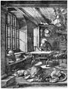

engraving

Has synonym(s): engraving, engravement
Definition: Engraving is the practice of incising a design onto a hard, usually flat surface by cutting grooves into it with a burin. The result may be a decorated object in itself, as when silver, gold, steel, or glass are engraved, or may provide an intaglio printing plate, of copper or another metal, for printing images on paper as prints or illustrations; these images are also called "engravings". Engraving is one of the oldest and most important techniques in printmaking.
Source: Wikipedia
Wikipedia Page (Something wrong with this association? Let us know.)
Wikidata Page (Something wrong with this association? Let us know.)